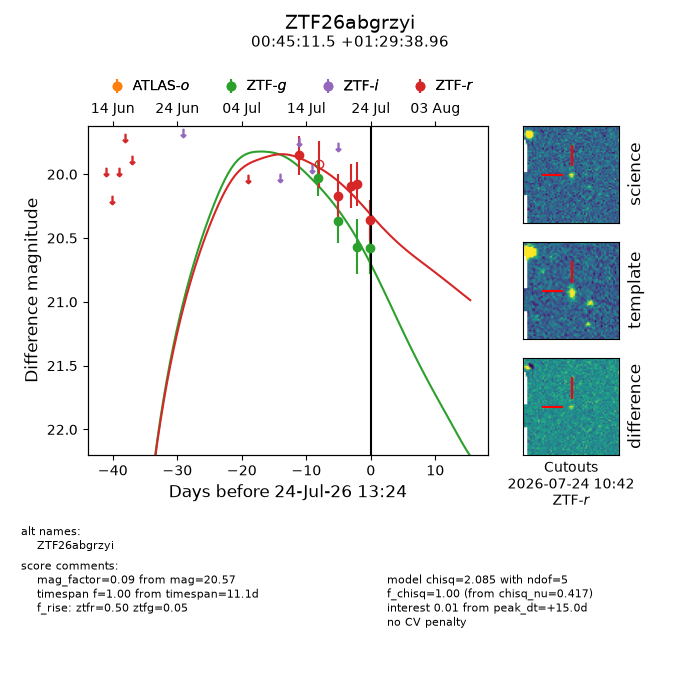
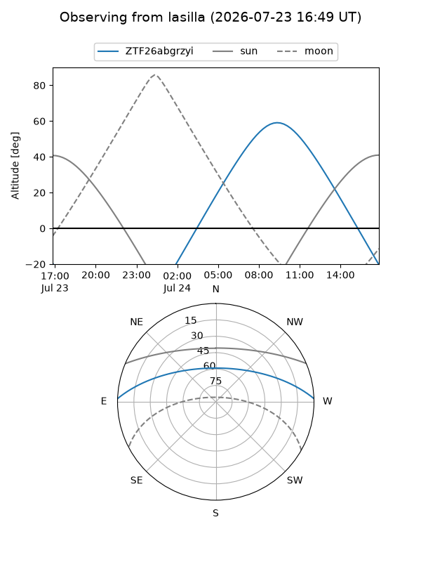
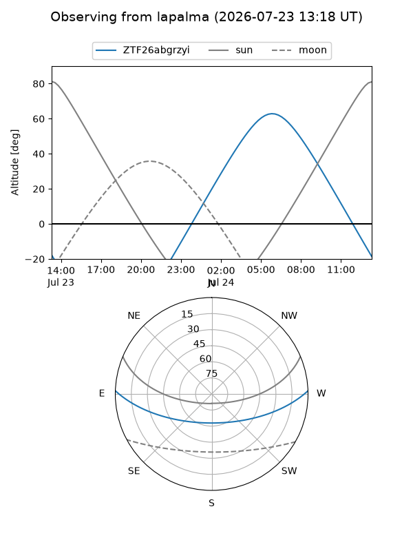
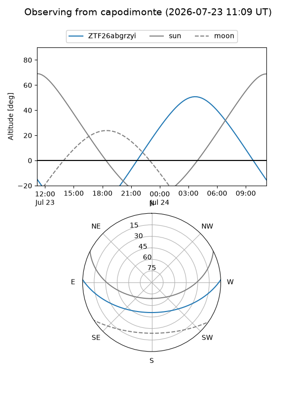
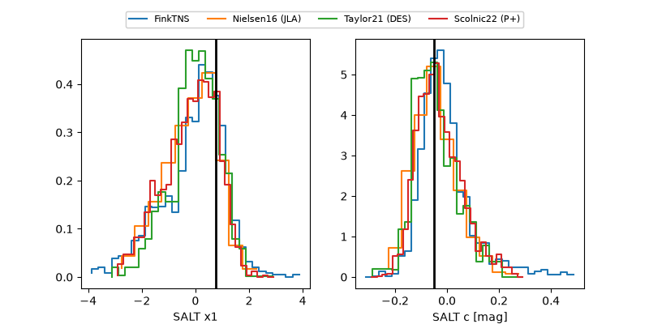

ZTF26abgrzyi
Target ZTF26abgrzyi at 2026-07-24 13:26
Aliases and brokers:
FINK-ZTF: ztf.fink-portal.org/ZTF26abgrzyi
Lasair-ZTF: lasair-ztf.lsst.ac.uk/objects/ZTF26abgrzyi
ALeRCE-ZTF: alerce.online/object/ZTF26abgrzyi
Direct TNS query: direct search
alt names
ZTF26abgrzyi (ztf,fink_ztf)
Coordinates:
equatorial (ra, dec) = 11.2981,+1.49416
equatorial (HMS+DMS) = 00:45:11.54,+01:29:38.96
galactic (l, b) = (119.6763,-61.33810)
Flags:
peak dt: +15.0
Photometry:
last ztfg=20.57, ztfr=20.36
4 ztfg, 5 ztfr detections
Lightcurve

Visibility



Additional plots
